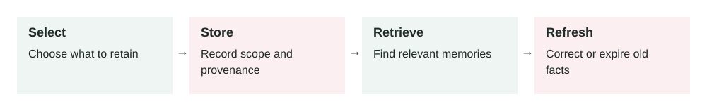

Memory In AI Agents
In this lesson
- 1. What It Means
- 2. Why It Matters In Production Systems
- 3. How It Works Step By Step
- 4. How To Apply It In A Project
- 5. Real-World Example 1: Coding Agent Memory
- 6. Real-World Example 2: Customer Support Agent Memory
- 7. Common Mistakes, Risks, And Trade-Offs
- 8. Practical Best Practices
- 9. Small Practice Exercise
2026-07-01 · Archived lesson · Original lesson text; technical claims not rechecked

Figure 7. Original study diagram added on 7 October 2026 to summarize this archived lesson. Each stage follows the previous stage; review may send the task back for correction.
1. What It Means
Memory in an AI agent means the system can keep useful information beyond one single message.
A normal chat model only sees what is inside its current context window.
A context window is the amount of text the model can read at one time.
Memory lets the agent remember things such as:
- User preferences
- Past decisions
- Project facts
- Repeated instructions
- Previous mistakes
- Useful summaries
- Long-running task state
- Important business rules
Simple meaning:
Memory helps an AI agent carry useful knowledge from the past into future work.
Memory can exist in different forms:
Short-term memory
Information used during the current task.
Example:
The user asked to compare three vendors.
The user cares most about cost and implementation time.
Long-term memory
Information saved across sessions.
Example:
The user prefers simple English and production-ready advice.
Task memory
Information about a specific workflow.
Example:
Deployment failed because Node version was wrong last time.
Check .nvmrc before debugging deploy issues.
User memory
Information about user preferences.
Example:
The user wants concise answers and dislikes vague theory.
Project memory
Information about a codebase, product, or business.
Example:
The backend service runs on port 3000.
The frontend service runs on port 3002.
Memory is an active research area. A useful primary source is the MemGPT paper, which discusses managing memory beyond a model’s limited context window: https://arxiv.org/abs/2310.08560
2. Why It Matters In Production Systems
Without memory, an AI agent can feel forgetful.
The user must repeat the same information again and again.
That creates problems:
- Slower workflows
- Repeated mistakes
- Poor personalization
- Weak long-running task handling
- More tokens wasted on repeated context
- Inconsistent behavior across sessions
In production, memory helps agents become more useful.
For example:
- A coding agent remembers repo-specific commands.
- A support agent remembers customer preferences.
- A learning agent avoids repeating recent lessons.
- A sales assistant remembers account history.
- A project manager agent remembers open decisions.
But memory also creates risk.
If memory is wrong, private, outdated, or overused, the agent can make bad decisions.
The key production idea:
Memory should be useful, controlled, reviewable, and safe.
Do not treat memory as magic. Treat it like a database that needs rules.
3. How It Works Step By Step
A typical memory system works like this:
User interacts with the agent
Example:
“For future lessons, explain concepts in detail with real-world examples.”
Agent detects possible memory
The system asks:
- Is this information useful later?
- Is it stable?
- Is it safe to store?
- Did the user clearly express a preference?
Memory is written
Example memory:
{ "type": "user_preference", "content": "User prefers detailed lessons with real-world examples.", "created_at": "2026-07-01", "source": "user_instruction" }Later request arrives
Example:
“Teach me a new GenAI concept.”
Relevant memories are retrieved
The system searches memory and finds:
User prefers detailed lessons. Avoid recent topics. Use simple English.Memory is added to context
The agent uses the memory while answering.
Agent responds
The lesson becomes more detailed and avoids recent repeats.
Memory may be updated
If the user changes preference, old memory should be updated or replaced.
4. How To Apply It In A Project
Start small. Do not store everything.
A practical memory design:
Step 1: Decide what memory is allowed
Good memory candidates:
- Stable user preferences
- Project-specific facts
- Repeated workflow rules
- Long-running task state
- Important decisions
Bad memory candidates:
- Passwords
- API keys
- Payment details
- Private health data unless your system is designed for it
- Temporary facts that will quickly become stale
- Guesswork that the user did not confirm
Step 2: Define memory types
Example:
{
"types": [
"user_preference",
"project_fact",
"workflow_rule",
"decision",
"task_state"
]
}
Step 3: Store source and date
Every memory should say where it came from.
Example:
{
"content": "Use npm run test:authorization for auth verification.",
"source": "deployment-debug-session",
"created_at": "2026-06-20"
}
Step 4: Retrieve only relevant memory
Do not load all memories every time.
If the user asks about deployment, retrieve deployment memories.
If the user asks about lessons, retrieve teaching preferences.
Step 5: Add freshness rules
Some memories expire.
Example:
Pricing memory expires after 30 days.
Deployment command memory should be verified if older than 90 days.
User writing preference can remain until changed.
Step 6: Let users correct memory
Users should be able to say:
“Forget that.” “Update this preference.” “That is no longer true.”
5. Real-World Example 1: Coding Agent Memory
Use case: A developer uses an AI coding agent across many sessions.
Without memory:
The user repeatedly says:
“Use the existing test command.” “Do not change unrelated files.” “The frontend API routes are in this folder.” “The deploy script is the source of truth.”
The agent wastes time rediscovering the same facts.
With memory:
The system stores:
{
"type": "project_fact",
"content": "For this repo, deployment logic is controlled by scripts/deploy-main.sh.",
"source": "previous deployment debugging session",
"created_at": "2026-06-18"
}
Later, the user asks:
“Why did deployment fail again?”
The agent retrieves the memory and starts in the right place.
Better behavior:
Instead of giving generic advice, it checks:
- Deployment script
- Node version
- Package manager version
- Migration step
- PM2 process names
- Logs from the real deploy path
Outcome:
The coding agent becomes faster and more repo-aware.
Risk:
If the deployment process changed yesterday, old memory may be stale.
Production fix:
Mark memory as “possibly stale” and verify important facts before acting.
6. Real-World Example 2: Customer Support Agent Memory
Use case: A SaaS company has an AI assistant for customer success.
Customer history:
- Customer uses the enterprise plan.
- They prefer email updates, not phone calls.
- They had a serious onboarding issue last month.
- Their renewal is in August.
User input:
“Draft a reply to Acme about their onboarding concern.”
Without memory:
The AI writes a generic response:
“We are sorry for the inconvenience. Our team will help you.”
With memory:
The agent retrieves:
{
"customer": "Acme",
"plan": "enterprise",
"preferred_contact": "email",
"recent_issue": "onboarding delay",
"renewal_month": "August"
}
Better output:
“Hi Acme team, thanks for raising this. We understand the onboarding delay affected your rollout timeline. I’ll send a written update by email today with the migration support plan, owner, and next milestones before your August renewal review.”
Outcome:
The reply is more relevant and more useful.
Risk:
Customer memory may include sensitive information.
Production fix:
Use access control. Only authorized employees should access account memory.
7. Common Mistakes, Risks, And Trade-Offs
Mistake 1: Saving everything
More memory is not always better.
Too much memory creates noise.
The agent may retrieve irrelevant or outdated information.
Mistake 2: Saving unverified guesses
Bad memory:
User probably prefers short answers.
Better memory:
User said: “Keep answers concise and practical.”
Memory should come from evidence.
Mistake 3: No expiration
Some facts become outdated.
Examples:
- Pricing
- API behavior
- Team members
- Server config
- Legal rules
- Product features
Use freshness rules.
Mistake 4: Mixing private data with general memory
Do not store sensitive data casually.
Memory needs the same security care as a database.
Mistake 5: Memory silently changes behavior
Users should understand when memory affects important output.
For high-impact domains, the system should show or explain important assumptions.
Trade-off: Personalization vs privacy
More memory improves personalization.
But it also increases privacy and security risk.
Production systems must choose carefully what to store.
8. Practical Best Practices
Store only useful, stable information
Ask:
“Will this still help later?”
Store memory with metadata
Include:
- Type
- Source
- Date
- Owner
- Confidence
- Expiry, if needed
Separate memory types
Keep user preferences, project facts, and task state separate.
Retrieve selectively
Do not load all memories into every prompt.
Verify high-risk memory
If memory affects money, security, legal, medical, or production systems, verify it first.
Allow correction and deletion
Users should control their memory.
Avoid sensitive secrets
Never store passwords, API keys, or private tokens as memory.
Log memory usage
Record which memories were used in important decisions.
Evaluate memory quality
Test:
- Did the agent retrieve the right memory?
- Did it ignore irrelevant memory?
- Did it handle stale memory safely?
- Did it avoid storing private data?
9. Small Practice Exercise
Imagine you are building an AI project assistant for a software team.
The user says:
“For this repo, always run
npm run test:authorizationbefore changing auth code.”
Answer these:
- Should this be stored as memory?
- What type of memory is it?
- What metadata should be saved?
- When should the agent retrieve it?
- When should the agent verify it instead of trusting it blindly?
A strong answer:
- Yes, store it.
- Type:
project_workflow_rule - Source: direct user instruction
- Retrieve it for auth-related code changes
- Verify if package scripts changed or the memory is old
- Do not apply it to unrelated repos